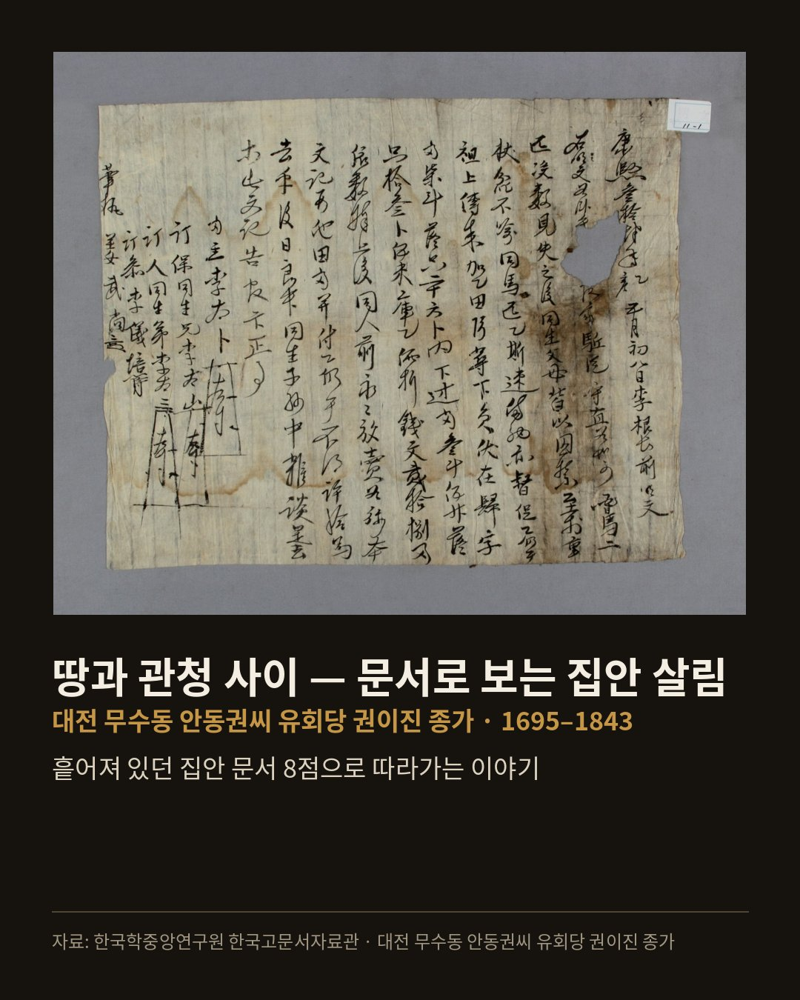
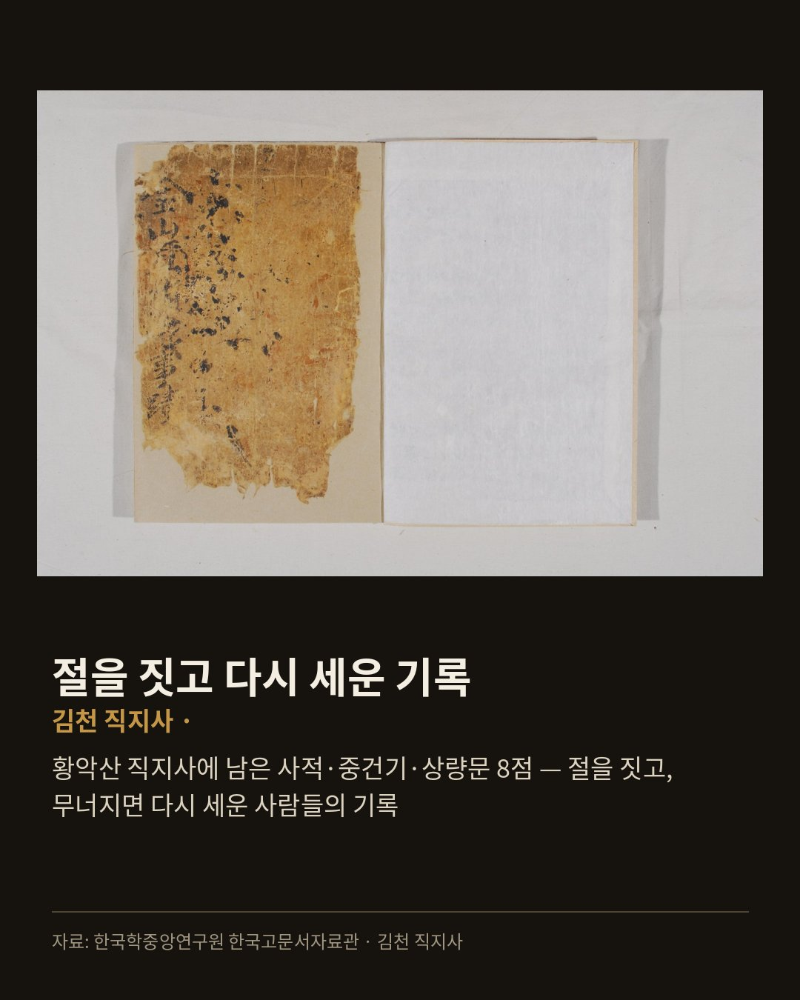
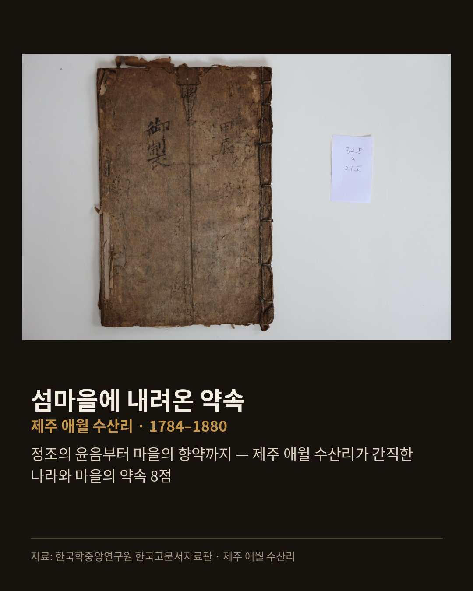
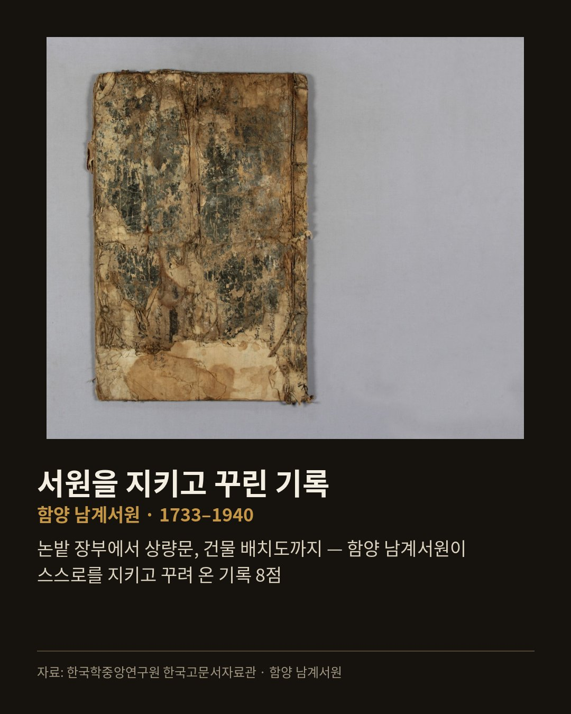
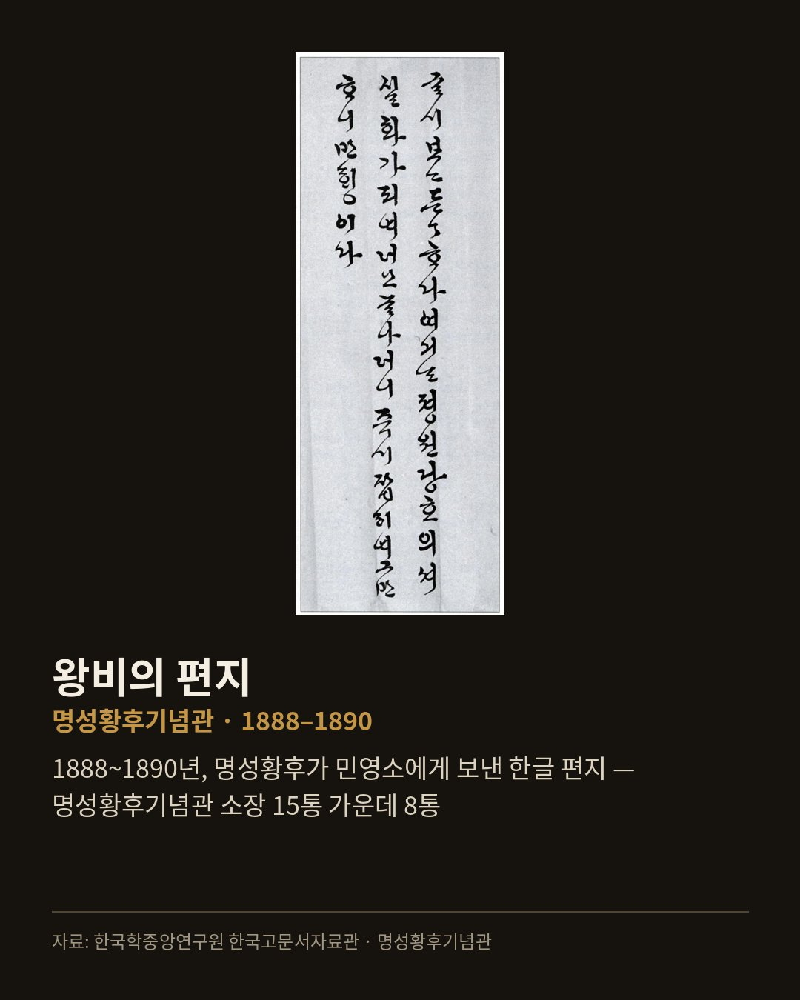
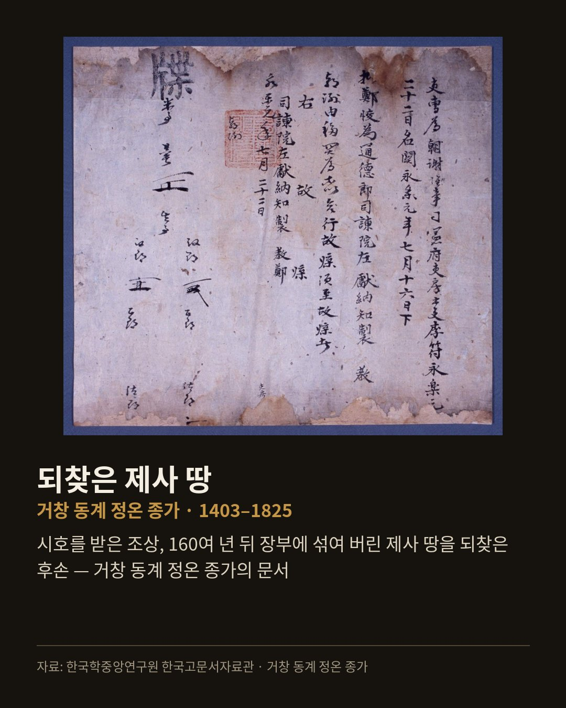
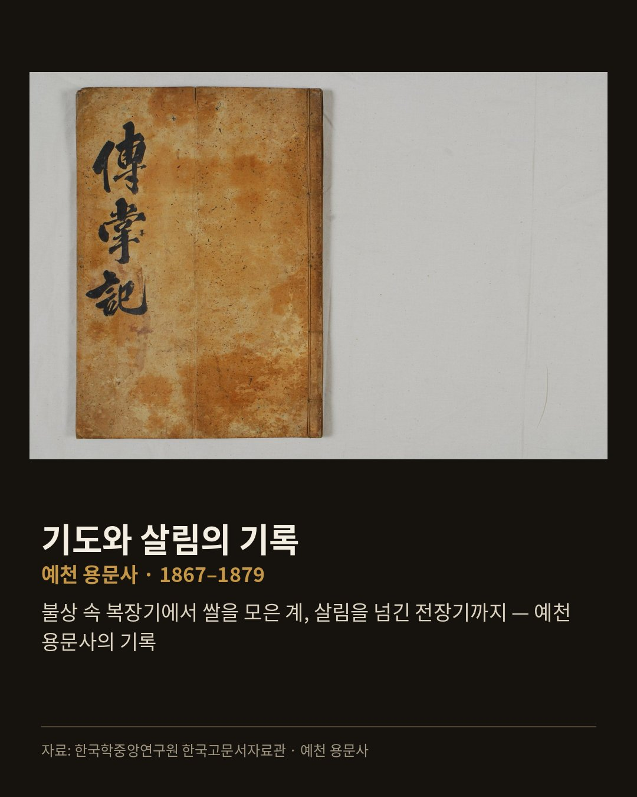
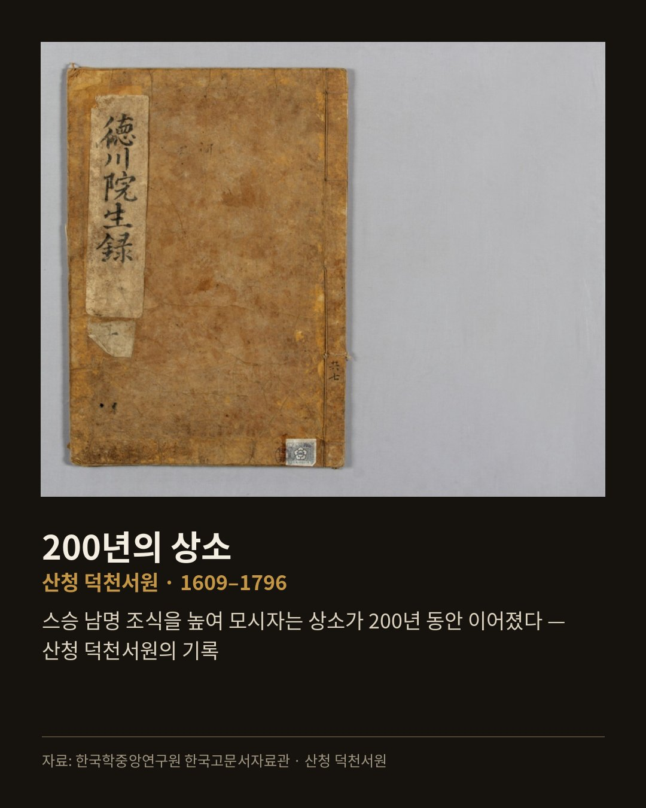
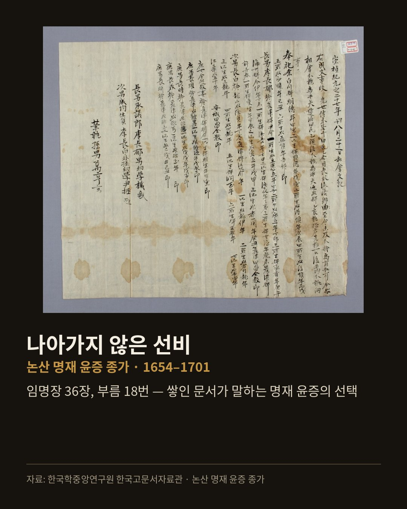
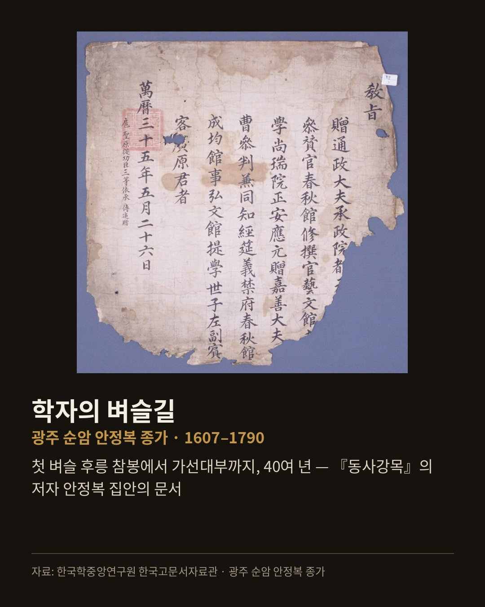

이미지 출처 — 예시의 고문서 사진은 한국학중앙연구원 한국고문서자료관 소장·제공 자료이며, 각 문서에 자료관 뷰어 원본 링크를 달았습니다. 자료관은 이미지 사용에 소장처 동의가 필요하다고 안내합니다(031-730-8873, 8876). 이 이미지를 다시 쓰려면 자료관에 문의하세요. 게재에 문제가 있으면 이슈 나 chgsong@naver.com으로 알려 주시면 바로 내리겠습니다.
영상 — 「고문서 한 장」 16편
좌우로 넘겨 보세요. 영상이 끝나면 다음 편이 이어서 재생됩니다. 「가로 16:9」를 누르면 유튜브용 가로 영상으로 바뀌고, 「릴스 문구 복사」를 누르면 게시 글이 복사됩니다.
‹ ›
EP.01 · 소개 흩어진 기록을, 다시 이야기로 임명장 한 장에서 시작해 ① 수집부터 ⑤ 패키징까지
83초
EP.02 · 소개 만든 것 보기 말 한마디로 만든 전시·카드뉴스·활동지, 에디팅 전후, 두 집안 비교
48초
EP.03 · 사찰 직지사를 다시 세운 손들의 기록 김천 직지사 · 문서 50건 중 8점
32초 · 가로 32초
EP.04 · 마을 정조의 윤음이 닿은 섬마을, 수산리 제주 애월 수산리 · 1784–1880 · 8점
37초 · 가로 37초
EP.05 · 서원 남계서원을 지키고 꾸린 문서들 함양 남계서원 · 1733–1940 · 8점
32초 · 가로 32초
EP.06 · 박물관 명성황후가 남긴 한글 편지 명성황후기념관 · 1888–1890 · 8통
33초 · 가로 33초
EP.07 · 박물관 임금이 할머니에게 쓴 편지 오죽헌·시립박물관 · 1665 무렵 · 편지 7통
50초 · 가로 50초
EP.08 · 문중 운조루를 지은 무관, 유이주의 길 구례 오미 문화류씨 운조루 · 1659–1784 · 7점
49초 · 가로 49초
EP.09 · 문중 160년 뒤에 되찾은 제사 땅 거창 동계 정온 종가 · 1403–1825 · 6점
49초 · 가로 49초
EP.10 · 마을 섬마을 구조라리 사람들의 호소 거제 일운 구조라리 · 1850–1912 · 8점
49초 · 가로 49초
EP.11 · 마을 정조의 윤음에서 금융조합까지, 하가리 제주 애월 하가리 · 1781–1912 · 8점
46초 · 가로 46초
EP.12 · 사찰 용문사에 남은 기도와 살림의 기록 예천 용문사 · 1514–1879 · 8점
39초 · 가로 39초
EP.13 · 서원 남명 조식을 위한 200년의 상소 산청 덕천서원 · 1609–1814 · 6점
42초 · 가로 42초
EP.14 · 문중 임금의 부름에 나아가지 않은 선비, 윤증 논산 명재 윤증 종가 · 1654–1701 · 8점
49초 · 가로 49초
EP.15 · 서원 병산서원을 움직인 사람들 안동 병산서원 · 1610–1811 · 7점
46초 · 가로 46초
EP.16 · 문중 『동사강목』을 쓴 학자, 안정복의 벼슬길 광주 순암 안정복 종가 · 1607–1790 · 8점
42초 · 가로 42초
결과물 — 예시 17개 · 소장처 16곳
예시마다 전시 웹페이지·수업 활동지·카드뉴스·SNS 글을 만들었습니다. 문중(집안)뿐 아니라 사찰·마을·서원·박물관에도 같은 방법이 통합니다.
‹ ›
③ 에디팅 후 혼인과 호적으로 보는 집안의 생활사 대전 회덕 은진송씨 동춘당 송준길 후손가 · 1660–1825 · 8점
Claude가 다듬은 이야기 문장으로 만든 전시·카드뉴스·활동지
③ 에디팅 전 송준길의 기록으로 본 생애 같은 소장처 · 1593–1671 · 6점
자동 선별·자동 캡션 초안 그대로 — 에디팅 전 상태. 같은 첩 이미지를 공유하는 낱장 문서는 하나만 골랐습니다

다른 소장처 땅과 관청 사이 — 문서로 보는 집안 살림 대전 무수동 안동권씨 유회당 권이진 종가 · 1695–1843 · 8점
문서유형(명문·고목·첩정…)으로 직접 정한 테마

EP.3 · 사찰 절을 짓고 다시 세운 기록 김천 직지사 · 문서 50건 중 8점
사적·중건기·상량문·헌답기 — 나무판과 종이에 남은 절의 건축사

EP.4 · 마을 섬마을에 내려온 약속 제주 애월 수산리 · 1784–1880 · 8점
정조의 윤음부터 마을의 향약·절목까지

EP.5 · 서원 서원을 지키고 꾸린 기록 함양 남계서원 · 1733–1940 · 8점
논밭 장부·완문·상량문·건물 배치도

EP.6 · 박물관 왕비의 편지 명성황후기념관 · 1888–1890 · 8통
명성황후가 민영소에게 보낸 한글 편지
EP.7 · 박물관 왕실 가족의 편지 오죽헌·시립박물관 · 1665 무렵 · 편지 7통
“임금도 할머니에게 편지를 썼을까요?”
EP.8 · 문중 운조루의 시간 구례 오미 문화류씨 운조루 · 1659–1784 · 7점
“운조루를 지은 유이주, 그는 어떤 길을 걸어왔을까요?”

EP.9 · 문중 되찾은 제사 땅 거창 동계 정온 종가 · 1403–1825 · 6점
“조상의 제사 땅이 남의 장부에 들어가 버렸다면?”
EP.10 · 마을 섬마을의 호소 거제 일운 구조라리 · 1850–1912 · 8점
“섬마을 사람들은 무엇을 호소했을까요?”
EP.11 · 마을 윤음에서 금융조합까지 제주 애월 하가리 · 1781–1912 · 8점
“왕의 말씀에서 은행까지, 한 마을이 걸어온 길은?”

EP.12 · 사찰 기도와 살림의 기록 예천 용문사 · 1514–1879 · 8점
“불상 안에는 무엇이 들어 있을까요?”

EP.13 · 서원 200년의 상소 산청 덕천서원 · 1609–1814 · 6점
“한 스승을 높이기 위해, 200년 동안 상소를 올린 사람들이 있습니다.”

EP.14 · 문중 나아가지 않은 선비 논산 명재 윤증 종가 · 1654–1701 · 8점
“임금이 수십 번 불러도, 나아가지 않은 선비가 있습니다.”
EP.15 · 서원 서원을 움직인 사람들 안동 병산서원 · 1610–1811 · 7점
“서원을 움직인 사람들은 누구였을까요?”

EP.16 · 문중 학자의 벼슬길 광주 순암 안정복 종가 · 1607–1790 · 8점
“『동사강목』을 쓴 학자는 어떤 벼슬길을 걸었을까요?”
카드뉴스 한눈에
소장처를 고르면 그 예시의 카드뉴스(1080×1350)를 처음부터 끝까지 넘겨 볼 수 있습니다.
혼인과 호적으로 보는 집안의 생활사 송준길의 기록으로 본 생애 땅과 관청 사이 — 문서로 보는 집안 살림 EP.3 절을 짓고 다시 세운 기록 EP.4 섬마을에 내려온 약속 EP.5 서원을 지키고 꾸린 기록 EP.6 왕비의 편지 EP.7 왕실 가족의 편지 EP.8 운조루의 시간 EP.9 되찾은 제사 땅 EP.10 섬마을의 호소 EP.11 윤음에서 금융조합까지 EP.12 기도와 살림의 기록 EP.13 200년의 상소 EP.14 나아가지 않은 선비 EP.15 서원을 움직인 사람들 EP.16 학자의 벼슬길
‹ ›
에디팅 전과 후
자동 초안 1825년 송영로의 호구단자 — 집안 식구를 관에 신고한 호적 서류. 에디팅 후 1862년 빙고별제 임명장을 받는 송영로의 이름이, 37년 앞선 이 호적 신고서에도 등장한다. 검토 비워 두면 모든 결과물에 "초안 — 원문 확인 전" 표시가 남습니다. 원문을 확인한 줄에만 확인을 넣으세요.
여러 소장처 비교 (대량 유사 연구)
예시에 쓴 소장처 16곳(문중·사찰·마을·서원·박물관) 4,934건을 같은 방식으로 정리해 비교했습니다. 문중에는 고신(임명장)이, 마을에는 절목(규정)이, 서원에는 장부가 많듯 소장처마다 남긴 기록의 결이 다릅니다.
직접 해 보기
/plugin marketplace add changgi/archive-tools
/plugin install aks-archive-harvester@changgi-archive-tools
💬 한국고문서자료관에서 유회당 권이진 종가 문서 받아줘
💬 이 집안 문서로 어떤 이야기를 만들 수 있을까?
💬 혼인과 호적 테마로 전시 웹페이지랑 카드뉴스 만들어줘
💬 대전 문중들을 비교 연구할 수 있게 패키지로 묶어줘
터미널에서 직접 실행하는 단계별 예제는 examples/README.md 에 있습니다.